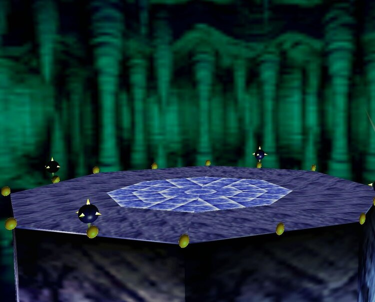
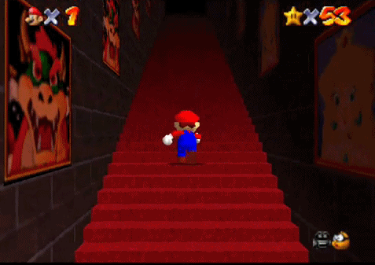

Super Mario 64 was released in 1996. This classic 3D platformer dazzled with its gameplay, which was groundbreaking at the time of its release. Still, today the game is perhaps best remembered for its imaginative game design and its perfect use of nostalgic ambiance and haunting liminality.
In Super Mario 64, you play as a small man with a red hat and blue trousers. The story begins when Mario ventures off to The Mushroom Castle to meet Princess Peach for cake. But when Mario arrives, he realizes the Princess has been kidnapped and held captive by a Dragon-Turtle named Bowser.
As Nintendo fans, all will attest: Nothing in the Mario Universe is as it seems. With a world so alien and bizarre from our natural world, it still manages to carefully and simultaneously imposes subtle (yet haunting) themes to give players a sense of a threat and challenge. These threatening auras emit not from the enemy hostiles that you encounter, but from the spaces in which you encounter them.
Nintendo games may appear lighthearted on the surface. But beneath that exterior, within the corridors of Princess Castle, you discover that Mario 64 touches on very basic fears and emotions.
Take, for example, the plot-line of Mario 64. Mario wants to see Princess Peach but has to get the Power Stars to free her from Bowser's clutches; It's all pretty straightforward. But the entire game, while reinventing and pioneering 3D technology, is also totally submerged in ambient aesthetics and ethereal elements that give the game a very sinister backdrop. These storytelling themes help make Mario 64 profoundly memorable (despite the infamous in-game camera, which makes the game unnecessarily difficult at times).